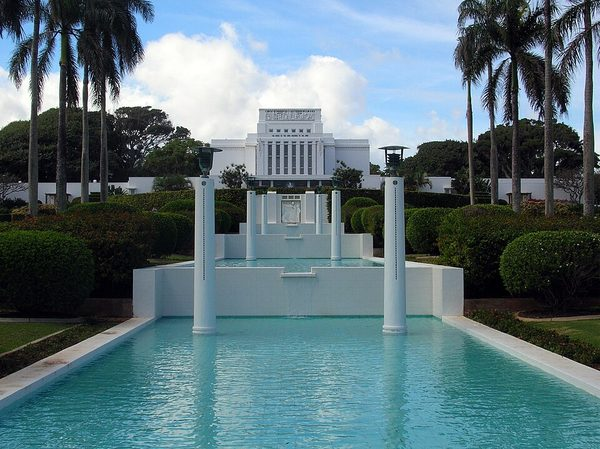
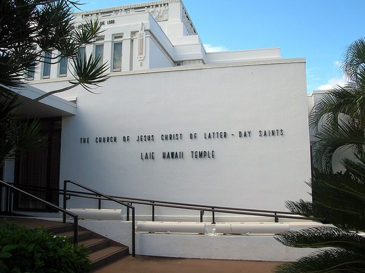

Laie Hawaii Temple
The white temple sits at the top of a long reflecting pool and is one of the first things people notice when they drive into town. The grounds are quiet, with palm trees and trimmed hedges all around, and it is a peaceful place to walk and think.
The building was finished in 1919, which makes it one of the oldest temples outside the mainland United States. Its flat, strong shape looks different from most churches.


Photos: Wikimedia Commons, public domain.